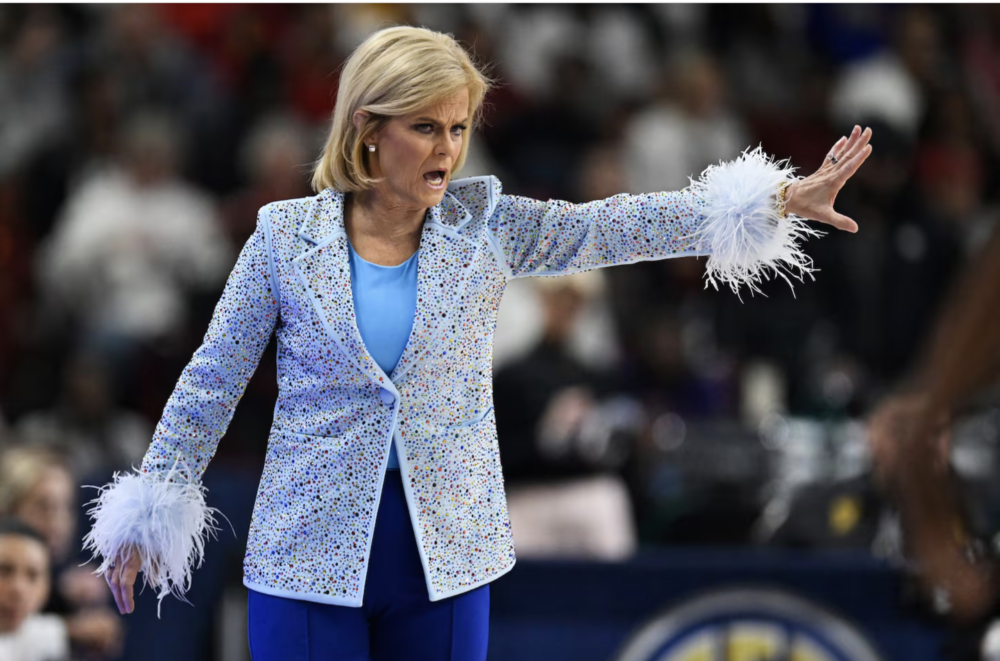

Mulkey grew up hooping with her sister at their rural Louisiana home. Now the home is overgrown and much of the property abandoned.
(Kent Babb/TWP)FIFTY MILES SOUTH AND WEST, a massive crowd is here to watch the older sister, to wear sequins like her, to cheer on her team. Five decades have passed since Kim Mulkey’s father first bounced a basketball to his daughters, explaining the keys to victory.
Mulkey explodes at officials and is suspicious of reporters. Mulkey declined repeated interview requests for this story, and after LSU received an email from The Washington Post seeking comment on various elements of this story, she used two NCAA tournament news conferences to take aim at The Post’s reporting, threatening legal action in the event of “a false story.” LSU declined to comment.
“Not many people are in a position to hold these kinds of journalists accountable,” she said. “But I am, and I’ll do it.”
It’s by no means her first or most high-profile controversy. In 2013, the NCAA suspended Mulkey for a tournament game after she criticized referees. She later publicly defended Baylor, her former employer, amid a sexual assault scandal in its football program.
In November, she told reporters after a road game that they could blame her if they were sick at Thanksgiving.
“I ain’t a sissy,” she said, holding a tissue and choking back sniffles. “I’ve got some kind of cold. It might be covid, but I ain’t testing.”
She is also known to hold grudges and clash with players, including about their appearances and displays of their sexuality, according to interviews with former players and news reports. Mulkey and Brittney Griner, the coach’s biggest star at Baylor, have feuded for more than a decade. And while Griner’s 294-day detainment in a Russian prison eventually required White House intervention, it wasn’t enough to ease tension long after Griner first said Mulkey encouraged gay players to hide their sexuality and “keep your business behind closed doors,” Griner wrote in her memoir.
Mulkey, in a 2013 interview with OutSports, insisted that she didn’t care about players’ sexuality and wouldn’t ask them about it. “I don’t think it’s anybody’s business,” she said then. “Whoever you are. I don’t care to know that.” Her conflicts with star players are over other issues too, though, and they have continued at LSU, even as players’ leverage and celebrity swell. Mulkey told a supporter last year that Angel Reese had been left off an awards list because of her GPA, according to email obtained via public records request by The Post.
In another email, Mulkey complained that Reese was one of several players who “stay on that social media crap.” Mulkey is many things, among them a 5-foot-4 hoops whisperer, an exceptional teacher, a coach willing to dive deeply into players’ emotions to push them past their preconceived limits. She is also one of college basketball’s most colorful personalities, viewed by some as an almost cartoonishly ornery supervillain.
LSU forced Iowa starCaitlin Clark to battle for every shot, every touch, every step. The Tigers shut off access to the lane, allowing Clark to be predictably lethal from long range but otherwise one-dimensional, enough for LSU’s blowout win and one achievement that eluded even Shaq and “Pistol Pete”: a national title. It was Mulkey’s seventh as a player or coach, and even in victory she was sarcastic and prickly.
“Coaches are hollering, ‘Get off the court,’ ” Mulkey snapped after winning the 2023 tournament, her fourth title as a head coach. “And I said: ‘Don’t tell me what to do; I’m fixing to win another championship.’ ”
Mulkey is known for her brash coaching style — and fashion choices. (Eakin Howard/Getty Images)
BACK WHEN THE FOOTAGE was grainy, if it existed at all, she was poetry in pigtails: whirling passes behind her back, between her legs, past opponents. Sonja Hogg knew Louisiana Tech would be getting speed and grit when she recruited Mulkey, but was it too much to hope for more?
“I thought maybe she’d grow a little bit,” Hogg says now.
But Mulkey had the speed to break the press, crash the lane, lay it in. The smarts to recognize when a defender dropped into a zone before pulling up to drain one from deep. Hogg and Barmore freed Mulkey up to riff because she had the conditioning to let her ignore fatigue and continue punishing her opponents, choking them out, stomping the court and beaming as time expired. Tech won by 14, and Mulkey got hooked on winning NCAA championships after one taste.
“She wants perfection. That’s what she was always seeking”
-Lindsey Hogg, former Louisiana Tech Coach and Kim Mulkey's College coach
This story has been reproduced as part of course work for the Philip Merrill College of Journalism at the University of Maryland. It was published on The Washington Post